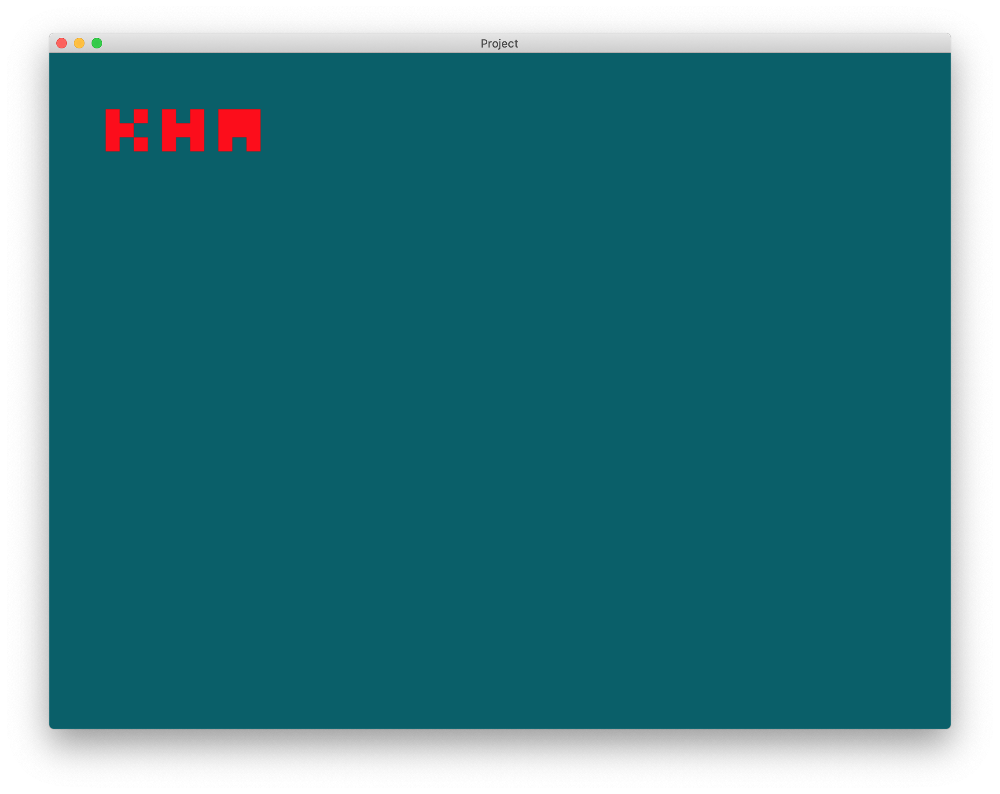

Setup
Setting up kha is relatively easy. Kha comes with its own haxe version, so no need to worry about installing haxe. Kha have different workflow, i.e., Kode Studio, Git and Haxelib. You can find about them here. We are going to VSCode + Git workflow, that almost everyone uses.
- Download and install:
- Git clone kha recursively, wherever you want.
git clone --recursive https://github.com/Kode/Kha.git
- In
VSCode - extension, install Kha extension pack and Haxe extension pack. - Go to setting, and navigate to
Extensions - Kha - Kha Pathand enter yourpath/to/Khathat you just cloned. - Open an empty folder and press
F1(fn+F1on macOS) and enterKha: Init Project. New starter Kha project should be created. - Go to
Runpanel, selectKha: HTML5from dropdown and press triangle next to it to start debugging.
You should get something like this:

Extra: Eliminating cache building issues
Kha cache code to improve build times. But sometime Kha doesn't detect changes made in code (this usually happen with small code changes such as typo fixes, variable changes, etc) and uses cached code and so the changes made doesn't appear. This can make programmer scratch their heads or even possible make them throw their laptop/pc out of window. You will have to delete build folder every time before running to avoid this issue. This can be solved with VSCode's tasks.
- Press
F1(fn+F1on macOS) and enterTasks: Configure Taskand selectKha: Build for Debug HTML5. - Paste:
{
"version": "2.0.0",
"tasks": [
{
"label": "Clean Build",
"type": "shell",
// "command": "rm -r \"${workspaceRoot}/build\""
// Uncomment above line if you are on unix (Linux/macOS)
// "command": "rmdir /Q /S \"${workspaceRoot}/build\""
// Uncomment above line if you are on windows
},
{
"type": "Kha",
"target": "Debug HTML5",
"problemMatcher": [
"$haxe-absolute",
"$haxe"
],
"dependsOn": [
"Clean Build"
],
"group": {
"kind": "build",
"isDefault": true
}
}
]
}
It just delete your build folder before the build process start.
Extra: Removing that Allow incoming connection blah blah blah on macOS, every time you use Krom.
To get around this annoying thing, VSCode's tasks comes to rescue once again.
{kind=link}
- Open
task.json - Add below object to
tasksarray:
{
"label": "Build Krom",
"type": "shell",
"command": "node path/to/Kha/make krom"
},
{
"label": "Krom",
"type": "shell",
"command": "path/to/Krom.app/Contents/MacOS/Krom ${workspaceRoot}/build/krom ${workspaceRoot}/build/krom-resources",
"dependsOn": [
"Clean Build",
"Build Krom"
],
"dependsOrder": "sequence",
"problemMatcher": []
}